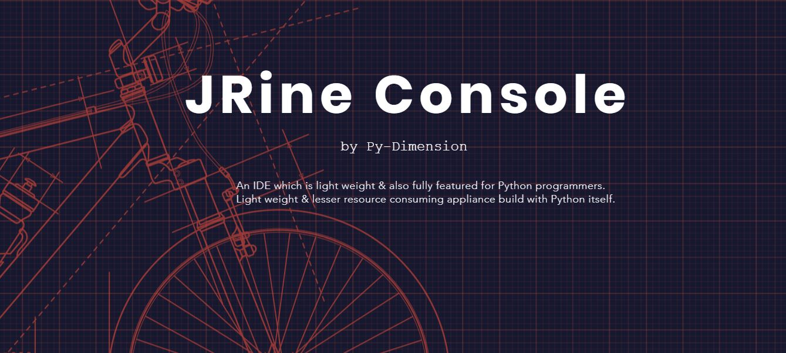

<!Doctype html>
<html>
    <head>
        <meta http-equiv="Content-Security-Policy" content="
        default-src 'self' 'unsafe-inline';
        script-src 'self' 'unsafe-inline';
        connect-src *">
        <title>Welcome to JaRine Console</title>
        <script>window.$ = window.jQuery = require("./jquery-3.5.0.min.js");</script>
        <link href="./node_modules/electron-tabs/electron-tabs.css"rel="stylesheet">
        <link rel="stylesheet" href="./node_modules/dragula/dist/dragula.css">
        <link href="./node_modules/jstree/dist/themes/default/style.min.css" rel="stylesheet">
        <link href="./css/editorStyle.css" rel="stylesheet">
        <link href="./css/editorStyle.css" rel="stylesheet"/>
        <style>
            body{
                margin: 0;
            }
        </style>
    </head>
    <body>
        <!--h1>This is Demo space</h1-->
        <div class="etabs-tabgroup">
            <div class="etabs-tabs"></div>
            <div class="etabs-buttons"></div>
            <!--div class="TabContainer"></div-->
            
        </div>
        <div class="etabs-views"></div>
        
        <!--#######################################>
        
        <p class="aligncenter">
            
        </p>
        <style>
            .aligncenter {
                text-align: center;
            }
        </style>
        
        <!--############################################-->
        
        
        
        <!--script> window.$ = window.renderer = require("./renderer_test.js");</script-->

        <!--script src="./node_modules/jstree/dist/jstree.min.js" type="text/javascript"></script>
        <script src="./tester/test1.js" type="text/javascript"></script-->
        <script>
            window.$ = window.renderer = require("./renderer.js")]
            //require('./renderer.js')
        </script>
        
        
    </body>

    <!--script>
        window.$ = window.jstree = require("./node_modules/jstree/dist/jstree.min.js")
        require('./node_modules/jstree/dist/jstree.min.js')
    </script-->
    <!--script>
        window.$ = window.test1 = require("./tester/test1.js")
        //require('./tester/test1.js')
    </script-->
    
    
</html>
